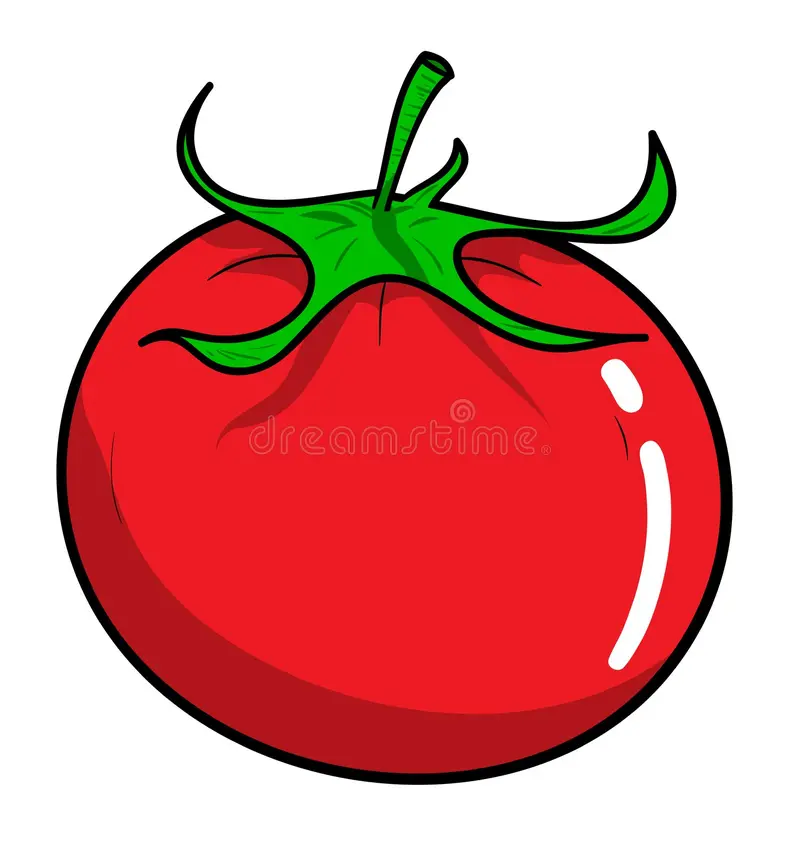

The wild ancestor of the tomato, Solanum pimpinellifolium, is native to western South America.[7] These wild versions were the size of peas.[7] The first evidence of domestication points to the Aztecs and other peoples in Mesoamerica, who used the fruit fresh and in their cooking. The Spanish first introduced tomatoes to Europe, where they became used in Spanish food. In France, Italy and northern Europe, the tomato was initially grown as an ornamental plant. It was regarded with suspicion as a food because botanists recognized it as a nightshade, a relative of the poisonous belladonna.[3] This was exacerbated by the interaction of the tomato's acidic juice with pewter plates.[8] The leaves and fruit contain tomatine, which in large quantities would be toxic. However, the ripe fruit contains a much lower amount of tomatine than the immature fruit.[9]
The tomato (/təmeɪtoʊ/ or /təmɑːtoʊ/) is the edible berry of the plant Solanum lycopersicum,[1][2] commonly known as the tomato plant. The species originated in western South America, Mexico, and Central America.[2][3] The Nahuatl word tomatl gave rise to the Spanish word tomate, from which the English word tomato derived.[3][4] Its domestication and use as a cultivated food may have originated with the indigenous peoples of Mexico.[2][5] The Aztecs used tomatoes in their cooking at the time of the Spanish conquest of the Aztec Empire, and after the Spanish encountered the tomato for the first time after their contact with the Aztecs, they brought the plant to Europe, in a widespread transfer of plants known as the Columbian exchange. From there, the tomato was introduced to other parts of the European-colonized world during the 16th century.[2]